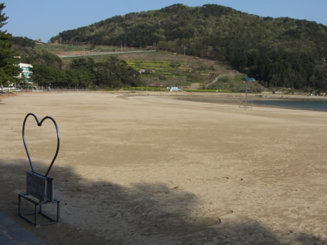

我們在下午三時四十五分離開南海錦山菩提庵登山口, 穿過村莊, 然後循南海之路一直走, 沿途櫻花夾道歡迎和鼓勵我們兩個喜歡用雙腳旅行的窮傻瓜, 於下午四時二十五分來到一個巴士站, 望望站名, 原來是「Sangju Silver Sand Beach」, 不經不覺已經來到南海尚州銀沙海灘了! 只是步行了四十分鐘, 比估計的近了一些。

繼續向前走一會, 路旁有一間名叫「펜션영상그린하우스」的汽車酒店, 看見一樓是一間好像超級市場的店舖, 因沒有吃午餐, 便走出看看有什麼可以暫時醫肚。
超級市場內的東西偏貴, 買一個蛋糕算了! 看見超級市場外有幾張桌木子, 便坐在那裡兩份吃, 不知是否肚餓, 覺得蛋糕真是很好味`!
尚州銀沙海灘入口
吃完蛋糕, 休息了一會, 繼續行程, 沿馬路向前走幾十步, 跨過一條溪流, 來到一個 T 字路口, 尚州銀沙海灘 (상주은모래비치 Sangju Silver Sand Beach)的入口就在右邊。。
哈哈~~~~~~ 這裡也可以看到錦山山頂上的菩提庵, 從這裡看更覺險峻。我們就是從菩提庵那裡一口氣走到來尚州銀沙海灘這裡, 其實路途很遙遠的, 。
接著在路口轉右朝銀尚州銀沙海灘的方向走去。
銀尚州銀沙海灘前是一個茂盛蒼翠的松林, 入口處有一個有趣的公仔, 一看便知道前面便是海灘。
穿過松林, 眼前豁然, 迎面是一個彎彎的、從左至右、很寧靜、很廣闊的沙灘, 金黃色的沙子, 十分漂亮。一片金黃色的沙灘, 為什麼稱為「銀沙海灘」? 估計因為現在是黃昏, 沙子被斜陽染成金黃色而已。
海水碧藍清澈, 十分平靜, 四周環境秀麗, 不愧是南海最著名的海水浴場。
沿沙灘旁的步道向左慢慢走。
沙灘旁擺放了一個心型的戀人聖地, 正想走去拍照, 怎料幾個正在松樹下吃碗麵的年輕男女, 可能恐怕我們和其他人的行為一樣:「 拍完又看, 看完又拍, 拍完又看, 看元又拍…….. 然後站在心型前上傳往社交網站、 Send 短訊………..」, 立即匆匆放下碗麵, 跑到心型前拍照!
原本打算等他們離開便拍照, 原來他們正在我所講的: 拍完又看, 看元又拍, 拍完又看, 看元又拍…….. 然後站在心型前上傳往社交網站、 Send 短訊……….. 談天說地 ……. 玩耍………!

沒辦法, 唯有沿沙灘繼續向前走, 估計稍後離開時他們應該已經走了吧!
銀尚州銀沙海灘旁的 Harmony Pension, 面對沙灘和大海, 環境十分優美。
銀尚州銀沙海灘的風景真是十分優美。
沿沙灘旁左邊的步道走了一會, 看見景色好像差不多的, 便掉頭返回戀人聖地, 剛才那幾位年輕人還站在心型雕像附近, 有些仍然繼續在玩自拍, 有些在玩手機。唉! 算了吧! 又不是很特別的景點!
在銀尚州銀沙海灘閒逛了半小時, 心情十分暢快, 這行程也宣佈完結了。按原定計劃, 接著是繼續步行往松亭松風海水浴場 (송정솔바람해수욕장), 然後乘巴士往德國村(남해독일마을)的, 只可惜因今早大雨, 延遲了三個半鐘頭才出發, 看看手錶, 現在已經是下午五時五分, 離太陽下山只有約一小時, 不可能按原定計劃進行, 唯有在這裡結束今天的行程, 而南海郡所有行程到此也全部完滿完結了!
接著是步行往銀尚州銀沙海灘旁的巴士站, 乘巴士返回南海公用客運站。